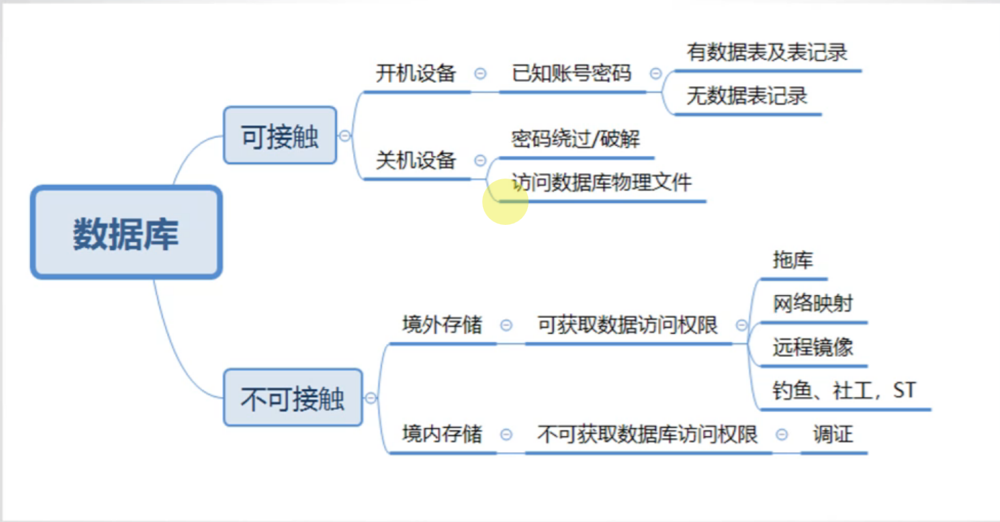
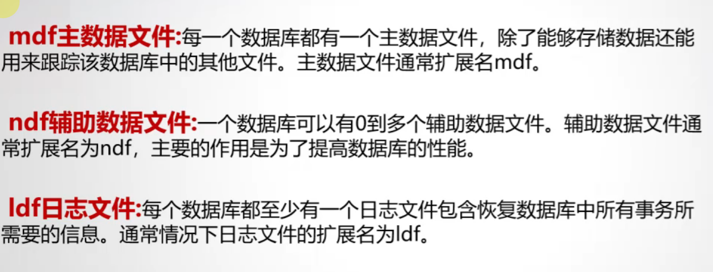

数据库取证概述
数据库固定|数据库存储逻辑
对数据库进行数据固定之前，需要了解数据库存储分布，主要在内存和物理磁盘中。
内存 ——数据页/数据记录
在内存中数据存储的方式是按照数据页或数据记录的结构，该结构和物理磁盘中数据文件中的数据页或数据记录结构一致。

在物理磁盘中数据存储主要包含三大类文件：数据文件、日志文件、和控制文件。其中主要包含数据库中数据记录的是数据文件，而日志文件中也包含一定量的数据库的数据记录。
我们可以先查看配置文件，从配置文件中找到日志文件的存放路径，从而获取我们想要的信息。
数据库默认路径
MYsql:
windows下数据文件路径：C:\programdata\MYSQL\Mysql sever 5.7.29\data
linux下数据文件路径：/var/lib/mysql/
以上的路径为默认路径，有些大的站点不可能只用一块盘来存储数据，所以很有可能换
如果我们可以通过仿真等方式进入了当前数据库，我们可以执行下边的这个命令来查看当前的数据存储目录，指令：show global variables like “%datadir”:
查看mysql数据库文件存储路径 my.ini OR my.cnf 来找到相关的数据存储路径
Oracle:
- Windows下数据文件的路径：D：\app\test\ordata\test
- Linux下数据文件路径：/home/oracle/ordata/orcl/
- 指令：select name from v$datafile://查询表空间中数据文件的具体位置
SQL Server:
- C:\program files\Microsoft sql server\mssql 10_50.SQLEXPRESS\MSSQL\DATA
还可以利用文件的扩展名来查找数据存储路径，.mdf .ldf .bak .sql
不管是用取证大师也好，或者挂载镜像之后用 来搜也好都可以能找到相关的索引文件，然后在进行逻辑还原

SQLserver
数据库文件；

sqlserver总是会包含四个数据库：master、modle、tempdb、msdb，除了这四个其他的都是用户自己创建的库
数据库基础
常见的关系型数据库Mysql、SqlServer、Oracle、Sqlite
Mysql数据库，电脑中建议安装两个数据库，一个高版本的一个低版本的，以5.5，5.6为分水岭。
MYsql
mysql体系结构可以分为三个部分：服务层、存储引擎层、文件系统层。
mysql文件：
- .ini/cnf
- .err错误文件
- ib_logfile事务日志文件（innodb）
- binlog二进制日志文件
- .frm表结构文件
- .ibdata共享表空间文件（innodb）
- .ibd独立表空间文件（innodb）
- .myi索引文件（myisam）
- .myd数据文件（myisam）
数据库存放数据的目录data下存放文件的不同代表它采用的存储引擎的不同，这一点很重要，后续备份还原会用到。
MYsql结构：
data目录：
如果数据库用的是myisam引擎，则目录底下有
- .frm(表文件)
- .myd(数据)
- .myi(索引)文件
如果数据库用的是innoDB引擎，则目录下有
- .frm(表文件)
- .ibd(数据)文件
数据库取证的常规流程：
场景：扣押了一台使用mysql数据库的服务器，需要查看数据库数据
- 冷备份数据库数据：
- 将数据拷贝到取证电脑上，该电脑安装了mysql数据库
- 停止取证电脑上的 mysql服务：net stop mysql
- 将需要取证的数据替换到取证电脑mysql数据库数据目录
- 绕过密码，登录数据库查看数据取证
这里需要注意的是我们如果数据库出现两个日志文件的话会启动失败，需要我们删除一个或者重命名。
数据库版本的获取:

数据库密码绕过与备份还原
sqlserver密码恢复：
在实际的取证过程中会遇到DBMS采用的sql身份验证方式，而并未集成windows身份验证方式，此时要访问数据库中的信息，就要对sqlserver密码的恢复或者绕过
（其实和虚拟机绕过登录密码差不多）
第一步：停掉默认的实例
1 | net stop MSSQLServer |
第二步：以单用户模式启动
1 | net start MSSQLServer /m SQLCMD |
第三步：以管理员的权限运行cmd,执行以下命令
1 | SQLCMD -A |